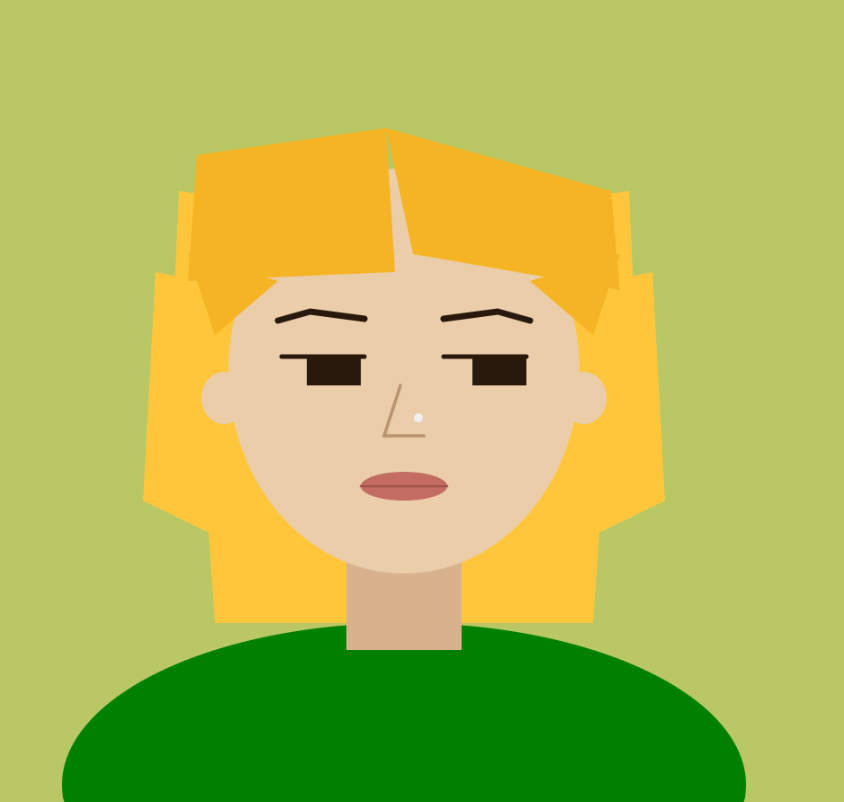
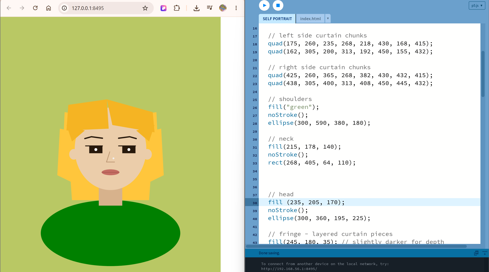
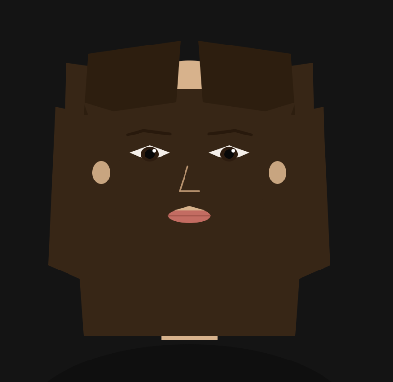

This week I made a self portrait in p5.js using only geometric primitives.
The process was a lot more iterative than I expected. Most of it was trial and error with coordinates, adjusting numbers until shapes landed in the right place. I quickly learned that drawing order matters as much as the shapes themselves — the hair kept eating my face until I understood that p5.js paints like layers, back to front.
The most intricative part was the hair. I used quad() instead of rectangles to get the angled, chunky curtain shapes, and the values was just really complex as the four corners were in coordinates. Overall I enjoyed how stylised this looks but thought the process was a bit inefficient!

The aspect I found most difficult was mapping each shape function's value field to pixels on screen. Adjusting color also took a lot of experimenting. Though I understand RGB values, it still feels unintuitive to get the right color i want by expressing numbers.

